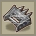
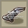
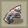
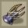

กรงเล็บ
พอดีผมเล่นสายกรงเล็บอยากถามว่ากรงเล็บมีเลเวลไหนบ้าง
และขายที่ไหนบ้างครับ
และขายที่ไหนบ้างครับ
http://eco.froztic.in.th/archive/ecofanclub/
http://eco.froztic.in.th/archive/ecofanclub/viewtopic.php?f=14&t=77845
 (เมื่อไหรจะแก้เนี่ย)
(เมื่อไหรจะแก้เนี่ย)-คนหน้าตาดี- เขียน:Claw
กงเล็บ
Thai Army Claw
คลิกเพื่อดูตัวอย่าง
Level : 1
พลังโจมตี[ทุบ-ฟัน-แทง-เวทมนต์] : 8-10-18-0
ความทนทานสูงสุด : 15
น้ำหนัก / ความจุ / น้ำหนักตอนสวมใส่ : 25.0 / 20.0 / 20.0
อาชีพที่สวมใส่ : Scout Class / Joint Job
แหล่งที่มา : Monster [Weapon Box - Doom Doom]
แหล่งที่มา : S Avoid + 10
Replica Thief Claw
คลิกเพื่อดูตัวอย่าง
Level : 1
พลังโจมตี[ทุบ-ฟัน-แทง-เวทมนต์] : 1-1-1-0
ความทนทานสูงสุด : 1
น้ำหนัก / ความจุ / น้ำหนักตอนสวมใส่ : 25.0 / 20.0 / 20.0
อาชีพที่สวมใส่ : All Job
แหล่งที่มา : Weapon Merchant[Sky Tower Island - Dominion]
ราคาซื้อ : 1,000 G
Scout Craw
คลิกเพื่อดูตัวอย่าง
Level : 30
พลังโจมตี[ทุบ-ฟัน-แทง-เวทมนต์] : 8-10-18-0
ความทนทานสูงสุด : 15
น้ำหนัก / ความจุ / น้ำหนักตอนสวมใส่ : 17.5 / 14.0 / 20.0
อาชีพที่สวมใส่ : Scout Class
แหล่งที่มา : Caravan Merchant[Steap Desert] / Wood Box 6 / Treasure 11 / Container 4
ราคาซื้อ : 20,000 G
Iron Knuckle
คลิกเพื่อดูตัวอย่าง
Level : 50
พลังโจมตี[ทุบ-ฟัน-แทง-เวทมนต์] : 16-18-26-0
ความทนทานสูงสุด : 20
น้ำหนัก / ความจุ / น้ำหนักตอนสวมใส่ : 14.0 / 10.5 / 15.0
อาชีพที่สวมใส่ : Scout Class
แหล่งที่มา : Weapon Seller[Morg City] / Treasure 13 / Treasure 14 / Container 5
ราคาซื้อ : 62,000 G
Battle Knuckle
คลิกเพื่อดูตัวอย่าง
Level : 60
พลังโจมตี[ทุบ-ฟัน-แทง-เวทมนต์] : 20-22-30-0
ความทนทานสูงสุด : 25
น้ำหนัก / ความจุ / น้ำหนักตอนสวมใส่ : 17.5 / 14.0 / 20.0
อาชีพที่สวมใส่ : Scout Class
แหล่งที่มา : Weapon Create LV 7 / Treasure 13 / Treasure 14 / Container 6
Fank Craw
คลิกเพื่อดูตัวอย่าง
Level : 70
พลังโจมตี[ทุบ-ฟัน-แทง-เวทมนต์] : 25-27-35-0
ความทนทานสูงสุด : 25
น้ำหนัก / ความจุ / น้ำหนักตอนสวมใส่ : 17.5 / 14.0 / 20.0
อาชีพที่สวมใส่ : Scout Class
แหล่งที่มา : Weapon Create LV 8
Ludy Eyes
คลิกเพื่อดูตัวอย่าง
Level : 80
พลังโจมตี[ทุบ-ฟัน-แทง-เวทมนต์] : 29-33-42-0
ความทนทานสูงสุด : 25
น้ำหนัก / ความจุ / น้ำหนักตอนสวมใส่ : 17.5 / 14.0 / 20.0
อาชีพที่สวมใส่ : Scout Class
แหล่งที่มา : Weapon Create LV 9
Beast Cry
คลิกเพื่อดูตัวอย่าง
Level : 90
พลังโจมตี[ทุบ-ฟัน-แทง-เวทมนต์] : 31-38-47-0
ความทนทานสูงสุด : 30
น้ำหนัก / ความจุ / น้ำหนักตอนสวมใส่ : 26.0 / 20.0 / 20.0
อาชีพที่สวมใส่ : Scout Class
แหล่งที่มา : Weapon Create LV 10 / Quest Weapon LV 90
Penry Clawl
คลิกเพื่อดูตัวอย่าง
Level : 99
พลังโจมตี[ทุบ-ฟัน-แทง-เวทมนต์] : 31-38-47-0
ความทนทานสูงสุด : 30
น้ำหนัก / ความจุ / น้ำหนักตอนสวมใส่ : 26.0 / 20.0 / 20.0
อาชีพที่สวมใส่ : Scout Class
แหล่งที่มา : Quest Weapon LV 99
เพิ่มเติม : ??